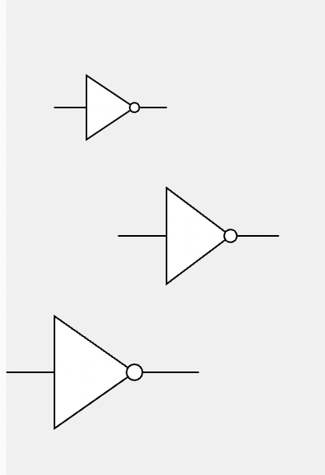
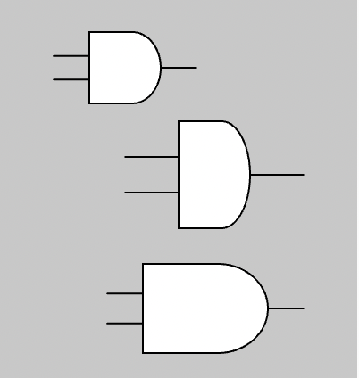
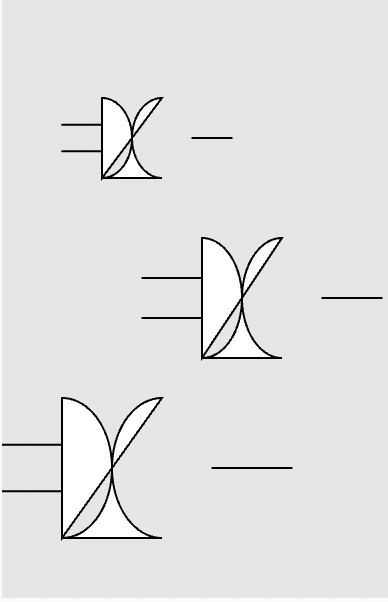
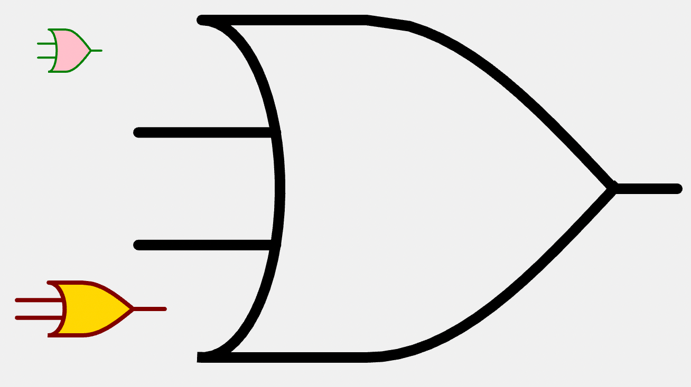
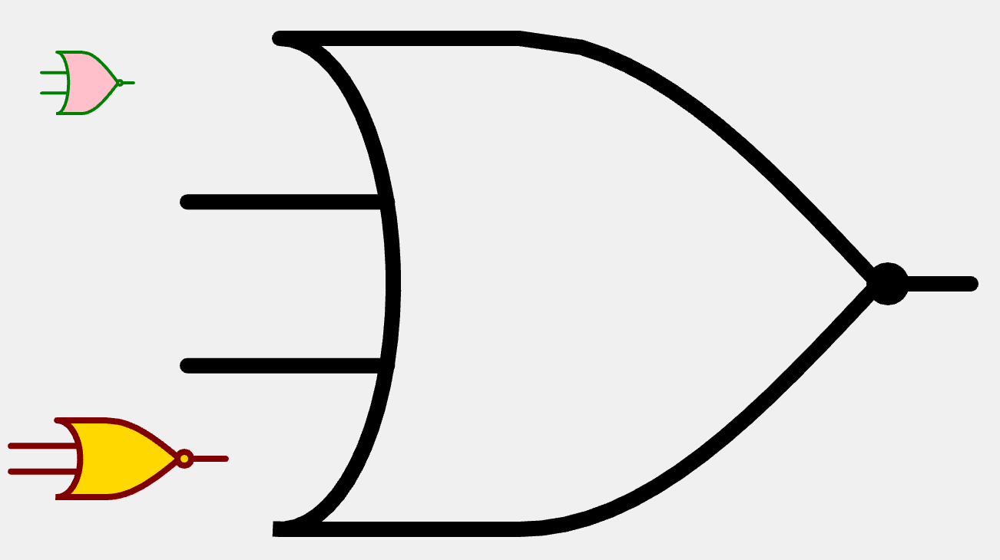
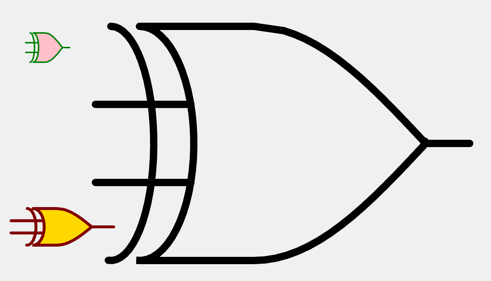
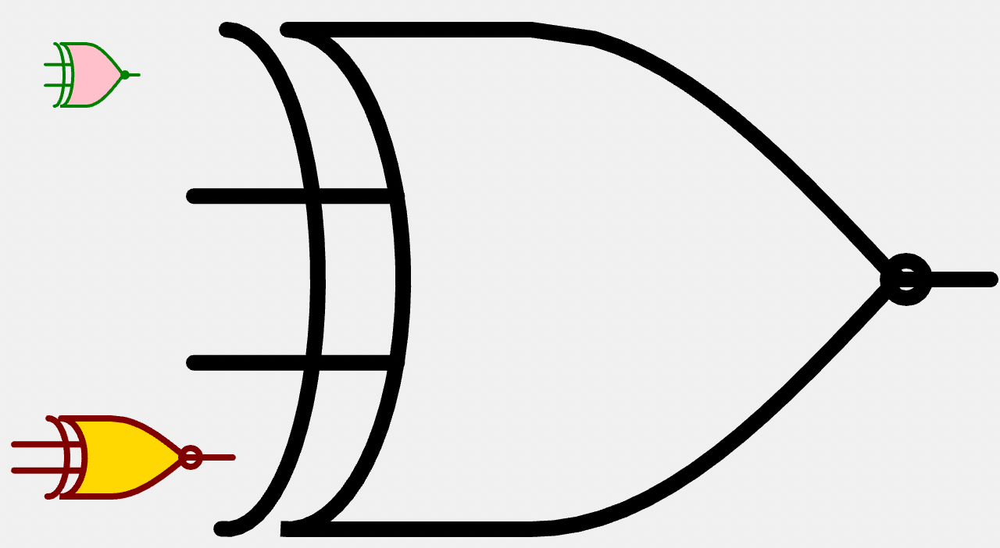

Drawing Gates
We will be using the Processing version 5 JavaScript library for doing web-based drawing. This is called the p5.js library. Because Processing has been around since 2000 there is able code that generative AI has been trained on. Getting the correct results is pretty easy.
We need a library for drawing gates in our simulators. We use the following drawing conventions:
The standard function parameters are:
- X position on the canvas
- Y position on the canvas
- Width of the gate (not including connecting wires)
- Height of the gate
- Length of the connecting wires
The drawing must be made so that the fill color, stroke color, and stroke can all be inherited from the drawing context.
Drawing basic
Buffer
We will start with a simple buffer logic gate that does not change the input signal. We use a triangle shape to draw a buffer.
Sample Buffer Prompt
Create a p5.js function called drawBuffer(x,y,w,h,l) for a logic buffer symbol. The function should take parameters x, y, width, height and wire length.
Place the logic gate with the upper left corner of the triangle at the point x,y with a width and height from the parameters. Add wire length as input and output wires.
Create a test of this function on a 200x300 canvas drawing three examples of the drawBuffer using different sizes.
Draw the tests on a lightgray background.
ChatGPT Dialog using the p5.js Visual Art Composer
Sample Buffer Response

1 2 3 4 5 6 7 8 9 10 11 12 13 14 15 16 17 18 19 20 | |
Edit this MicroSim on p5.js Editor
Drawing an Inverter
Inverter Prompt
That was perfect!
Now create a new function called drawInverter.
It will have exactly the same input parameters,
but the drawing will have a small circle at the
right tip of the triangle.
Draw the tests on a lightgray background.
Inverter Response

1 2 3 4 5 6 7 8 9 10 11 12 13 14 15 16 17 18 19 20 21 22 23 24 | |
The AND Gate
Sample AND Prompt
That was also perfect!
Now create a new function called drawAND that will draw
a AND logic gate.
This will be similar to the previous functions,
but instead of drawing a triangle you will need
to make the right side of the shape a circle.
Place a series of points on the canvas using the vertex(x,y) function that makes the correct shape.
Use beginShape() and endShape() around the points.
Sample AND Response

1 2 3 4 5 6 7 8 9 10 11 12 13 14 15 16 17 18 19 20 21 22 23 24 25 26 27 28 29 30 31 32 33 | |
Failed Attempts at OR Gate

This is where GPT-4 falls apart. Despite my best attempts, I could not get GPT-4 to correctly draw the complex curves needed for a logical OR gate. You can see the results in the transcript.
I had to resort to manually drawing the curves, which was a slow-painful process and took several hours to make it robust enough that it could work with a variety of sizes.
I think this really demonstrates the limits of what GPT-4 is capable of, and what it can't do.

Edit the Logical OR gate MicroSim
One hint that GPT-4 did give was to use the map function to have the x-coordinates move linearly and only use the sin() functions on the y-coordinates. This worked reasonably well and the curves do match up pretty closely with the official SVG drawing of the OR gate. If you want a precise mapping you can also write a program that converts the SVG points to a set of (x,y) points.
{kind=link}
NOR Symbol Prompt

Once we have a good OR gate, we can ask GPT to just use that to create a NOR gate. All it has to do is add a circle on the output.
Here is the code it generated:
1 2 3 4 5 6 7 8 9 10 | |
So it is clear that GPT-4 has been trained on how to add a small bit of drawing to an existing function.
Note that it tends to use ellipse() rather than circle(). I don't know exactly why it does this. Perhaps it believes that ellipse is more general and easier to customize. I think that circle with only three parameters is a little easier to read.
XOR Gate
XNOR Prompt

Now can you please repeat the same process
but this time generate the code for an exclusive OR.
Please call the new function drawXOR and make the
parameters exactly the same.
It got the result pretty close. The only real cleanup is to move the new arc
to the end and add a noFill() for the new extra curve.
This is an easy to change.
XNOR

Our last function is XNOR, which just adds a circle to the XOR symbol.
Note that we did not automatically fill the circle with black. We decided to inherit the fill from the drawing context. Forcing the circle to fill with black is a valid option and might make drawings a little easier to read. This could also be an additional parameter to these functions.